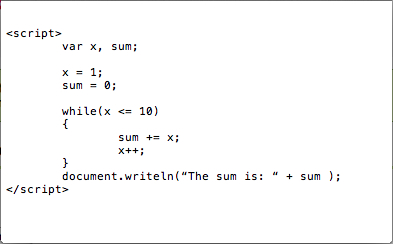

Chapter 7
Exercises
7.1
a) sequence, selection, and repetition.
b) if...else.
c) Counter-controlled (or definite).
d) Sentinel, signal, flag, dummy.
7.2
x = x + 1;
x += 1;
x++;
++x;
7.3
a) z = x++ + y;
b) if(count > 10)
document.writeln("Count is greater than 10");
c) total -= --x;
d) q = q % divisor;
q %= divisor;
7.4
a) var sum, x;
b) x = 1;
c) sum = 0;
d) sum += x;
e) document.writeln("The sum is: " + sum);
7.5

7.6
a) product = 25, x = 6.
b) quotient = 5/6 (0.833...), x = 6.
7.7
a) Error: missing the closing curly brace of the if statement.
Correction: add closing curly brace after the ++c; statement.
b) Error: the semicolon after else causes the following line to always run.
Correction: remove the semicolon after else.
7.8
The variable z is never changed in the while loop. So if (z >= 0) is true it will be an infinite loop. To prevent an infinite loop, z should be decremented somewhere in the loop so that z eventually reaches 0 and ends the loop.